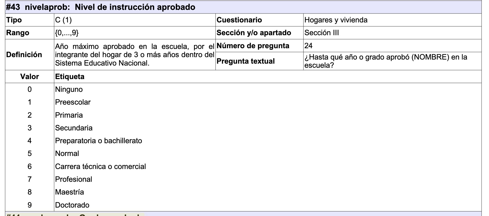
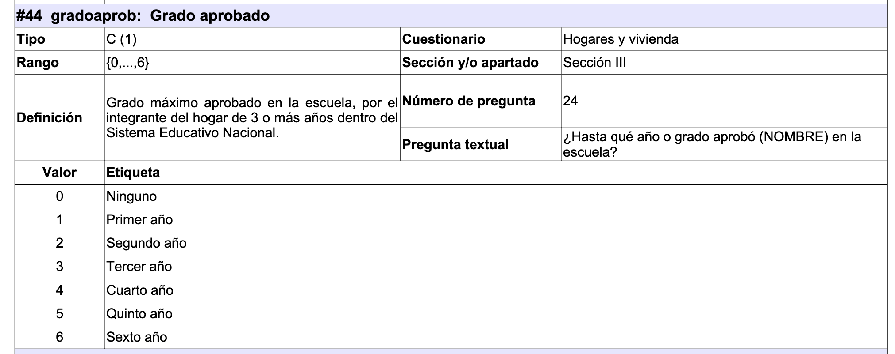
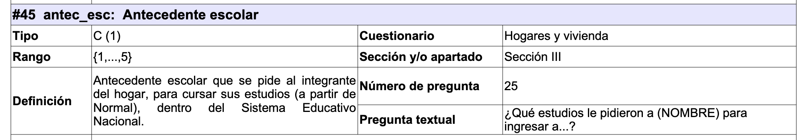
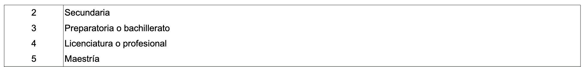

Variables básicas
Años de escolaridad
Se construye junto con nivel, grado y en este caso antecedente. Esta última no siempre está disponible.
 
 
Revisemos estas variables
%>% tabyl (nivelaprob) %>% adorn_totals ()
nivelaprob n percent
11472 0.037044213
0 17445 0.056331615
1 13245 0.042769404
2 87665 0.283078880
3 79751 0.257523798
4 51059 0.164874517
5 1463 0.004724170
6 7180 0.023184924
7 37269 0.120345255
8 2572 0.008305240
9 563 0.001817982
Total 309684 1.000000000
%>% tabyl (gradoaprob)%>% adorn_totals ()
gradoaprob n percent
11472 0.03704421
0 17443 0.05632516
1 32022 0.10340218
2 39624 0.12794978
3 127677 0.41228155
4 23251 0.07507976
5 21511 0.06946113
6 36684 0.11845623
Total 309684 1.00000000
%>% tabyl (antec_esc)%>% adorn_totals ()
antec_esc n percent
260630 0.841599824
1 496 0.001601633
2 5204 0.016804226
3 40219 0.129871094
4 2572 0.008305240
5 563 0.001817982
Total 309684 1.000000000
Esta variable está como cadena, como vamos a hacer operaciones es mejor que estén en formato numérico.
%<>% mutate_at (vars (nivelaprob, gradoaprob, antec_esc), ~ readr:: parse_number (.x))
La variable se construirá con un case_when()
%>% mutate (escoacum = case_when (< 2 ~ 0 , # ninguna y preescolar no suman == 2 ~ gradoaprob, # en primaria cuentan los grados nomás == 3 ~ 6 + gradoaprob, # secundaria se suma primaria == 4 ~ 9 + gradoaprob, # Bachillerato y prepa > 4 & nivelaprob < 8 & antec_esc== 1 ~ 6 + gradoaprob, # Normales y técnicos con primaria > 4 & nivelaprob < 8 & antec_esc== 2 ~ 9 + gradoaprob, # Normales y técnicos con secundaria > 4 & nivelaprob < 8 & antec_esc== 3 ~ 12 + gradoaprob, # Normales y técnicos con prepa o bachillerato > 4 & nivelaprob < 8 & antec_esc== 4 ~ 16 + gradoaprob, # Normales y técnicos con licenciatura == 8 & antec_esc== 4 ~ 16 + gradoaprob, # Maestría con licenciatura == 9 & antec_esc== 4 ~ 16 + gradoaprob, # Doctorado con licenciatura == 9 & antec_esc== 5 ~ 18 + gradoaprob # Doctorado con maestría %>% filter (is.na (escoacum)) %>% tabyl (nivelaprob, antec_esc)%>% # estos no se sabe qué son. podemos revisar nivel actual adorn_totals ()
nivelaprob NA_
<NA> 11472
Total 11472
Hoy revisamos la distribución
%>% mutate (escoacum = case_when (< 2 ~ 0 , # ninguna y preescolar no suman == 2 ~ gradoaprob, # en primaria cuentan los grados nomás == 3 ~ 6 + gradoaprob, # secundaria se suma primaria == 4 ~ 9 + gradoaprob, # Bachillerato y prepa > 4 & nivelaprob < 8 & antec_esc== 1 ~ 6 + gradoaprob, # Normales y técnicos con primaria > 4 & nivelaprob < 8 & antec_esc== 2 ~ 9 + gradoaprob, # Normales y técnicos con secundaria > 4 & nivelaprob < 8 & antec_esc== 3 ~ 12 + gradoaprob, # Normales y técnicos con prepa o bachillerato > 4 & nivelaprob < 8 & antec_esc== 4 ~ 16 + gradoaprob, # Normales y técnicos con licenciatura == 8 & antec_esc== 4 ~ 16 + gradoaprob, # Maestría con licenciatura == 9 & antec_esc== 4 ~ 16 + gradoaprob, # Doctorado con licenciatura == 9 & antec_esc== 5 ~ 18 + gradoaprob # Doctorado con maestría %>% tabyl (escoacum)
escoacum n percent valid_percent
0 30690 9.910102e-02 1.029134e-01
1 8351 2.696620e-02 2.800357e-02
2 10806 3.489363e-02 3.623597e-02
3 13820 4.462614e-02 4.634287e-02
4 9513 3.071841e-02 3.190012e-02
5 8508 2.747317e-02 2.853004e-02
6 36667 1.184013e-01 1.229562e-01
7 7852 2.535488e-02 2.633026e-02
8 9675 3.124152e-02 3.244336e-02
9 62685 2.024160e-01 2.102028e-01
10 7656 2.472197e-02 2.567301e-02
11 9182 2.964958e-02 3.079018e-02
12 38843 1.254279e-01 1.302530e-01
13 4585 1.480541e-02 1.537497e-02
14 4413 1.425001e-02 1.479820e-02
15 5994 1.935521e-02 2.009979e-02
16 12966 4.186849e-02 4.347914e-02
17 13101 4.230441e-02 4.393183e-02
18 1695 5.473321e-03 5.683876e-03
19 636 2.053706e-03 2.132711e-03
20 249 8.040454e-04 8.349765e-04
21 187 6.038413e-04 6.270707e-04
22 86 2.777024e-04 2.883854e-04
23 43 1.388512e-04 1.441927e-04
24 9 2.906188e-05 3.017987e-05
NA 11472 3.704421e-02 NA
%<>% mutate (escoacum = case_when (< 2 ~ 0 , # ninguna y preescolar no suman == 2 ~ gradoaprob, # en primaria cuentan los grados nomás == 3 ~ 6 + gradoaprob, # secundaria se suma primaria == 4 ~ 9 + gradoaprob, # Bachillerato y prepa > 4 & nivelaprob < 8 & antec_esc== 1 ~ 6 + gradoaprob, # Normales y técnicos con primaria > 4 & nivelaprob < 8 & antec_esc== 2 ~ 9 + gradoaprob, # Normales y técnicos con secundaria > 4 & nivelaprob < 8 & antec_esc== 3 ~ 12 + gradoaprob, # Normales y técnicos con prepa o bachillerato > 4 & nivelaprob < 8 & antec_esc== 4 ~ 16 + gradoaprob, # Normales y técnicos con licenciatura == 8 & antec_esc== 4 ~ 16 + gradoaprob, # Maestría con licenciatura == 9 & antec_esc== 4 ~ 16 + gradoaprob, # Doctorado con licenciatura == 9 & antec_esc== 5 ~ 18 + gradoaprob # Doctorado con maestría
Hoy tenemos nuestra variable
%>% filter (edad> 3 ) %>% with (hist (escoacum)
Aquí dejo el código en STATA para la ENADID 2018, que no tiene antecedentes
* Calcular escoacum es el número de años de escolaridad.
/* 00 Ninguno
01 Preescolar
02 Primaria
03 Secundaria
04 Preparatoria o bachillerato
05 Normal básica
06 Estudios técnicos o comerciales con primaria terminada
07 Estudios técnicos o comerciales con secundaria terminada
08 Estudios técnicos o comerciales con preparatoria terminada
09 Normal de licenciatura
10 Licenciatura o profesional
11 Maestría
12 Doctorado*/
gen escoacum = .
label var escoacum "Años aprobados"
replace escoacum=0 if nivel==0 // ninguna
replace escoacum=0 if nivel==1 // preescolar
replace escoacum=grado if nivel==2 // primaria
replace escoacum=grado+6 if nivel==3 // secundaria
replace escoacum=grado+6 if nivel==6 // estudios técnicos con primaria terminada
replace escoacum=grado+9 if nivel==4 // preparatoria o bachillerato
replace escoacum=grado+9 if nivel==5 // Normal básica
replace escoacum=grado+9 if nivel==7 // estudios técnicos con secundaria terminada
replace escoacum=grado+12 if nivel>7 & nivel<11 // niveles con preparatoria terminada
replace escoacum=grado+16 if nivel==11 // maestría
replace escoacum=grado+18 if nivel==12 // doctorado
Tipo de hogar
%>% tabyl (parentesco) %>% adorn_totals ()
parentesco n percent
101 90102 2.909482e-01
201 56343 1.819371e-01
202 96 3.099934e-04
205 59 1.905168e-04
301 116698 3.768293e-01
302 9 2.906188e-05
303 1573 5.079371e-03
304 1 3.229098e-06
401 117 3.778045e-04
403 2 6.458196e-06
405 5 1.614549e-05
406 2 6.458196e-06
421 2 6.458196e-06
431 7 2.260369e-05
451 2 6.458196e-06
501 1188 3.836168e-03
503 1 3.229098e-06
601 2575 8.314927e-03
602 19 6.135286e-05
603 3350 1.081748e-02
604 1 3.229098e-06
605 1 3.229098e-06
606 118 3.810336e-04
607 3 9.687294e-06
609 24696 7.974581e-02
610 852 2.751192e-03
611 3 9.687294e-06
612 234 7.556089e-04
613 2770 8.944602e-03
614 247 7.975872e-04
615 1071 3.458364e-03
616 6 1.937459e-05
617 6565 2.119903e-02
618 868 2.802857e-03
619 29 9.364384e-05
621 11 3.552008e-05
622 2 6.458196e-06
623 43 1.388512e-04
701 12 3.874918e-05
712 1 3.229098e-06
Total 309684 1.000000e+00
Vamos a quedarnos sólo un dígito ¿se recuerdan cómo hacer esto?
%<>% mutate (parent1d= stringr:: str_sub (parentesco, start = 1 , end = 1 )) %>% tabyl (parent1d) %>% adorn_totals ()
parent1d n percent
1 90102 2.909482e-01
2 56498 1.824376e-01
3 118281 3.819409e-01
4 137 4.423864e-04
5 1189 3.839398e-03
6 43464 1.403495e-01
7 13 4.197827e-05
Total 309684 1.000000e+00
1 - Jefe
2 - Cónyuge
3 - Hijo(a)
4 - Trabajadores del hogar + sus parientes
5 - Otros parentescos
6 - Otros
7 - Huéspedes
Vamos a crear dummies para cada una de estas opciones
%<>% :: dummy_cols (select_columns = "parent1d" ) names (poblacion2022) # veamos que hizo este paquete
[1] "folioviv" "foliohog" "numren" "parentesco" "sexo"
[6] "edad" "madre_hog" "madre_id" "padre_hog" "padre_id"
[11] "disc_camin" "disc_ver" "disc_brazo" "disc_apren" "disc_oir"
[16] "disc_vest" "disc_habla" "disc_acti" "cau_camin" "cau_ver"
[21] "cau_brazo" "cau_apren" "cau_oir" "cau_vest" "cau_habla"
[26] "cau_acti" "hablaind" "lenguaind" "hablaesp" "comprenind"
[31] "etnia" "alfabetism" "asis_esc" "nivel" "grado"
[36] "tipoesc" "tiene_b" "otorg_b" "forma_b" "tiene_c"
[41] "otorg_c" "forma_c" "nivelaprob" "gradoaprob" "antec_esc"
[46] "residencia" "edo_conyug" "pareja_hog" "conyuge_id" "segsoc"
[51] "ss_aa" "ss_mm" "redsoc_1" "redsoc_2" "redsoc_3"
[56] "redsoc_4" "redsoc_5" "redsoc_6" "hor_1" "min_1"
[61] "usotiempo1" "hor_2" "min_2" "usotiempo2" "hor_3"
[66] "min_3" "usotiempo3" "hor_4" "min_4" "usotiempo4"
[71] "hor_5" "min_5" "usotiempo5" "hor_6" "min_6"
[76] "usotiempo6" "hor_7" "min_7" "usotiempo7" "hor_8"
[81] "min_8" "usotiempo8" "pop_insabi" "atemed" "inst_1"
[86] "inst_2" "inst_3" "inst_4" "inst_5" "inst_6"
[91] "inscr_1" "inscr_2" "inscr_3" "inscr_4" "inscr_5"
[96] "inscr_6" "inscr_7" "inscr_8" "prob_anio" "prob_mes"
[101] "prob_sal" "aten_sal" "servmed_1" "servmed_2" "servmed_3"
[106] "servmed_4" "servmed_5" "servmed_6" "servmed_7" "servmed_8"
[111] "servmed_9" "servmed_10" "servmed_11" "servmed_12" "hh_lug"
[116] "mm_lug" "hh_esp" "mm_esp" "pagoaten_1" "pagoaten_2"
[121] "pagoaten_3" "pagoaten_4" "pagoaten_5" "pagoaten_6" "pagoaten_7"
[126] "noatenc_1" "noatenc_2" "noatenc_3" "noatenc_4" "noatenc_5"
[131] "noatenc_6" "noatenc_7" "noatenc_8" "noatenc_9" "noatenc_10"
[136] "noatenc_11" "noatenc_12" "noatenc_13" "noatenc_14" "noatenc_15"
[141] "noatenc_16" "norecib_1" "norecib_2" "norecib_3" "norecib_4"
[146] "norecib_5" "norecib_6" "norecib_7" "norecib_8" "norecib_9"
[151] "norecib_10" "norecib_11" "norecib_12" "razon_1" "razon_2"
[156] "razon_3" "razon_4" "razon_5" "razon_6" "razon_7"
[161] "razon_8" "razon_9" "razon_10" "razon_11" "diabetes"
[166] "pres_alta" "peso" "segvol_1" "segvol_2" "segvol_3"
[171] "segvol_4" "segvol_5" "segvol_6" "segvol_7" "hijos_viv"
[176] "hijos_mue" "hijos_sob" "trabajo_mp" "motivo_aus" "act_pnea1"
[181] "act_pnea2" "num_trabaj" "c_futuro" "ct_futuro" "entidad"
[186] "est_dis" "upm" "factor" "escoacum" "parent1d"
[191] "parent1d_1" "parent1d_2" "parent1d_3" "parent1d_4" "parent1d_5"
[196] "parent1d_6" "parent1d_7"
%>% summarise_at ((vars (starts_with ("parent1d_" ))), ~ mean (.x))
# A tibble: 1 × 7
parent1d_1 parent1d_2 parent1d_3 parent1d_4 parent1d_5 parent1d_6 parent1d_7
<dbl> <dbl> <dbl> <dbl> <dbl> <dbl> <dbl>
1 0.291 0.182 0.382 0.000442 0.00384 0.140 0.0000420
%>% tabyl (parent1d) %>% adorn_pct_formatting ()
parent1d n percent
1 90102 29.1%
2 56498 18.2%
3 118281 38.2%
4 137 0.0%
5 1189 0.4%
6 43464 14.0%
7 13 0.0%
Vamos a crear variables de conteo por hogar. Recordemos que el id del hogar era folioviv + foliohog
%<>% group_by (folioviv, foliohog) %>% mutate_at (vars (starts_with ("parent1d_" )), ~ sum (.x)) %>% ungroup ()
Hoy estas variables tendran conteos a nivel de hogar
%>% summarise_at ((vars (starts_with ("parent1d_" ))), ~ mean (.x))
# A tibble: 1 × 7
parent1d_1 parent1d_2 parent1d_3 parent1d_4 parent1d_5 parent1d_6 parent1d_7
<dbl> <dbl> <dbl> <dbl> <dbl> <dbl> <dbl>
1 1 0.723 1.80 0.00193 0.0181 0.814 0.000210
Como ves todos los hogares tienen un jefe o jefa de hogar.
Hoy de nuevo, con un case_when() haremos los tipos de hogar. Recuerda que trabajadores y huéspedes no son parte de la organización familiar.
%>% mutate (tipo_hog = case_when (> 0 & parent1d_3 > 0 & parent1d_5== 0 & parent1d_6== 0 ~ 1 , # pareja con hijes > 0 & parent1d_3== 0 & parent1d_5== 0 & parent1d_6== 0 ~ 2 , # pareja sin hijes == 0 & parent1d_3 > 0 & parent1d_5== 0 & parent1d_6== 0 ~ 3 , # mono con hijes == 0 & parent1d_3 > 0 & parent1d_5== 0 & parent1d_6> 0 ~ 4 , # mono con hijes + fam > 0 & parent1d_3== 0 & parent1d_5== 0 & parent1d_6 > 0 ~ 5 , # pareja sin hijes + fam > 0 & parent1d_3 > 0 & parent1d_5== 0 & parent1d_6 > 0 ~ 6 , # pareja con hijes + fam == 0 & parent1d_3== 0 & parent1d_5== 0 & parent1d_6== 0 ~ 7 , # uni > 0 ~ 8 #compuesto %>% filter (parent1d== 1 ) %>% tabyl (tipo_hog)
tipo_hog n percent valid_percent
1 33090 0.367250449 0.38057230
2 11312 0.125546603 0.13010075
3 11138 0.123615458 0.12809955
4 6873 0.076280216 0.07904725
5 1809 0.020077246 0.02080554
6 9950 0.110430401 0.11443621
7 11886 0.131917161 0.13670240
8 890 0.009877694 0.01023600
NA 3154 0.035004772 NA
¿Por qué hay missings ?
%>% mutate (tipo_hog = case_when (> 0 & parent1d_3 > 0 & parent1d_5== 0 & parent1d_6== 0 ~ 1 , # pareja con hijes > 0 & parent1d_3== 0 & parent1d_5== 0 & parent1d_6== 0 ~ 2 , # pareja sin hijes == 0 & parent1d_3 > 0 & parent1d_5== 0 & parent1d_6== 0 ~ 3 , # mono con hijes == 0 & parent1d_3 > 0 & parent1d_5== 0 & parent1d_6> 0 ~ 4 , # mono con hijes + fam > 0 & parent1d_3== 0 & parent1d_5== 0 & parent1d_6 > 0 ~ 5 , # pareja sin hijes + fam > 0 & parent1d_3 > 0 & parent1d_5== 0 & parent1d_6 > 0 ~ 6 , # pareja con hijes + fam == 0 & parent1d_3== 0 & parent1d_5== 0 & parent1d_6== 0 ~ 7 , # uni > 0 ~ 8 #compuesto %>% filter (is.na (tipo_hog)) %>% select (starts_with ("parent1d" ))
# A tibble: 8,723 × 8
parent1d parent1d_1 parent1d_2 parent1d_3 parent1d_4 parent1d_5 parent1d_6
<chr> <int> <int> <int> <int> <int> <int>
1 1 1 0 0 0 0 1
2 6 1 0 0 0 0 1
3 1 1 0 0 0 0 1
4 6 1 0 0 0 0 1
5 1 1 0 0 0 0 4
6 6 1 0 0 0 0 4
7 6 1 0 0 0 0 4
8 6 1 0 0 0 0 4
9 6 1 0 0 0 0 4
10 1 1 0 0 0 0 1
# ℹ 8,713 more rows
# ℹ 1 more variable: parent1d_7 <int>
Asi me doy cuenta de qué arreglo falta: faltan jefes solos(as) que viven con otros miembros familiares
%>% mutate (tipo_hog = case_when (> 0 & parent1d_3 > 0 & parent1d_5== 0 & parent1d_6== 0 ~ 1 , # pareja con hijes > 0 & parent1d_3== 0 & parent1d_5== 0 & parent1d_6== 0 ~ 2 , # pareja sin hijes == 0 & parent1d_3 > 0 & parent1d_5== 0 & parent1d_6== 0 ~ 3 , # mono con hijes == 0 & parent1d_3 > 0 & parent1d_5== 0 & parent1d_6> 0 ~ 4 , # mono con hijes + fam == 0 & parent1d_3== 0 & parent1d_5== 0 & parent1d_6>= 0 ~ 5 , # jefe + fam > 0 & parent1d_3== 0 & parent1d_5== 0 & parent1d_6 > 0 ~ 6 , # pareja sin hijes + fam > 0 & parent1d_3 > 0 & parent1d_5== 0 & parent1d_6 > 0 ~ 7 , # pareja con hijes + fam == 0 & parent1d_3== 0 & parent1d_5== 0 & parent1d_6== 0 ~ 8 , # uni > 0 ~ 9 #compuesto %>% filter (is.na (tipo_hog)) %>% select (starts_with ("parent1d" ))
# A tibble: 0 × 8
# ℹ 8 variables: parent1d <chr>, parent1d_1 <int>, parent1d_2 <int>,
# parent1d_3 <int>, parent1d_4 <int>, parent1d_5 <int>, parent1d_6 <int>,
# parent1d_7 <int>
Hoy sí ya tenemos nuestra variable
%<>% mutate (tipo_hog = case_when (> 0 & parent1d_3 > 0 & parent1d_5== 0 & parent1d_6== 0 ~ 1 , # pareja con hijes > 0 & parent1d_3== 0 & parent1d_5== 0 & parent1d_6== 0 ~ 2 , # pareja sin hijes == 0 & parent1d_3 > 0 & parent1d_5== 0 & parent1d_6== 0 ~ 3 , # mono con hijes == 0 & parent1d_3 > 0 & parent1d_5== 0 & parent1d_6> 0 ~ 4 , # mono con hijes + fam == 0 & parent1d_3== 0 & parent1d_5== 0 & parent1d_6>= 0 ~ 5 , # jefe + fam > 0 & parent1d_3== 0 & parent1d_5== 0 & parent1d_6 > 0 ~ 6 , # pareja sin hijes + fam > 0 & parent1d_3 > 0 & parent1d_5== 0 & parent1d_6 > 0 ~ 7 , # pareja con hijes + fam == 0 & parent1d_3== 0 & parent1d_5== 0 & parent1d_6== 0 ~ 8 , # uni > 0 ~ 9 #compuesto
Tiempo
En esta encuesta también tenemos una bateria de tiempo. Vamos a hacer algunas sumatorias de tiempo
%>% select (hor_1: usotiempo8)
# A tibble: 309,684 × 24
hor_1 min_1 usotiempo1 hor_2 min_2 usotiempo2 hor_3 min_3 usotiempo3 hor_4
<dbl> <dbl> <chr> <dbl> <dbl> <chr> <dbl> <dbl> <chr> <dbl>
1 NA NA "9" NA NA "9" NA NA "9" NA
2 48 0 "" NA NA "9" NA NA "9" 2
3 NA NA "9" 35 0 "" NA NA "9" NA
4 40 0 "" NA NA "9" NA NA "9" NA
5 12 0 "" 6 0 "" NA NA "9" NA
6 68 0 "" NA NA "9" NA NA "9" NA
7 NA NA "9" NA NA "9" 15 0 "" NA
8 50 0 "" 7 0 "" NA NA "9" NA
9 NA NA "9" NA NA "9" NA NA "9" NA
10 NA NA "9" NA NA "9" NA NA "9" NA
# ℹ 309,674 more rows
# ℹ 14 more variables: min_4 <dbl>, usotiempo4 <chr>, hor_5 <dbl>, min_5 <dbl>,
# usotiempo5 <chr>, hor_6 <dbl>, min_6 <dbl>, usotiempo6 <chr>, hor_7 <dbl>,
# min_7 <dbl>, usotiempo7 <chr>, hor_8 <dbl>, min_8 <dbl>, usotiempo8 <chr>
En esta base tenemos valores no para todas la persona del hogar… Y además si ponen 9, significa que no lo hizo.
<- poblacion2022 %>% select (folioviv, foliohog, numren, hor_1: usotiempo8)
Vamos a hacer una base larga que tiene una línea por actividad para cada individuo (309684*8)
<- time_use %>% pivot_longer (cols = - c (folioviv,foliohog, numren ),names_to = c (".value" , "act" ),names_pattern = "(.*)(.)" )
# A tibble: 6 × 7
folioviv foliohog numren act hor_ min_ usotiempo
<chr> <chr> <chr> <chr> <dbl> <dbl> <chr>
1 0100005002 1 01 1 NA NA "9"
2 0100005002 1 01 2 NA NA "9"
3 0100005002 1 01 3 NA NA "9"
4 0100005002 1 01 4 NA NA "9"
5 0100005002 1 01 5 NA NA "9"
6 0100005002 1 01 6 3 0 ""
%<>% mutate (tiempo= case_when (== "9" ~ 0 , == "8" ~ NA , != "9" ~ hor_* 60 + min_%>% mutate (tiempo= tiempo/ 60 )
Hoy volveremos a tener una base donde tenemos el tiempo en horas para cada individuo, con pivot_wider()
%>% select (folioviv, foliohog, numren, act, tiempo) %>% pivot_wider (names_from = act,names_prefix = "tiempo_" ,values_from = tiempo) %>% mutate (total_tiempo= rowSums (pick (tiempo_1: tiempo_8))) -> time_use
Hoy hacemos un join
%<>% left_join (time_use)
Joining with `by = join_by(folioviv, foliohog, numren)`
[1] "folioviv" "foliohog" "numren" "parentesco" "sexo"
[6] "edad" "madre_hog" "madre_id" "padre_hog" "padre_id"
[11] "disc_camin" "disc_ver" "disc_brazo" "disc_apren" "disc_oir"
[16] "disc_vest" "disc_habla" "disc_acti" "cau_camin" "cau_ver"
[21] "cau_brazo" "cau_apren" "cau_oir" "cau_vest" "cau_habla"
[26] "cau_acti" "hablaind" "lenguaind" "hablaesp" "comprenind"
[31] "etnia" "alfabetism" "asis_esc" "nivel" "grado"
[36] "tipoesc" "tiene_b" "otorg_b" "forma_b" "tiene_c"
[41] "otorg_c" "forma_c" "nivelaprob" "gradoaprob" "antec_esc"
[46] "residencia" "edo_conyug" "pareja_hog" "conyuge_id" "segsoc"
[51] "ss_aa" "ss_mm" "redsoc_1" "redsoc_2" "redsoc_3"
[56] "redsoc_4" "redsoc_5" "redsoc_6" "hor_1" "min_1"
[61] "usotiempo1" "hor_2" "min_2" "usotiempo2" "hor_3"
[66] "min_3" "usotiempo3" "hor_4" "min_4" "usotiempo4"
[71] "hor_5" "min_5" "usotiempo5" "hor_6" "min_6"
[76] "usotiempo6" "hor_7" "min_7" "usotiempo7" "hor_8"
[81] "min_8" "usotiempo8" "pop_insabi" "atemed" "inst_1"
[86] "inst_2" "inst_3" "inst_4" "inst_5" "inst_6"
[91] "inscr_1" "inscr_2" "inscr_3" "inscr_4" "inscr_5"
[96] "inscr_6" "inscr_7" "inscr_8" "prob_anio" "prob_mes"
[101] "prob_sal" "aten_sal" "servmed_1" "servmed_2" "servmed_3"
[106] "servmed_4" "servmed_5" "servmed_6" "servmed_7" "servmed_8"
[111] "servmed_9" "servmed_10" "servmed_11" "servmed_12" "hh_lug"
[116] "mm_lug" "hh_esp" "mm_esp" "pagoaten_1" "pagoaten_2"
[121] "pagoaten_3" "pagoaten_4" "pagoaten_5" "pagoaten_6" "pagoaten_7"
[126] "noatenc_1" "noatenc_2" "noatenc_3" "noatenc_4" "noatenc_5"
[131] "noatenc_6" "noatenc_7" "noatenc_8" "noatenc_9" "noatenc_10"
[136] "noatenc_11" "noatenc_12" "noatenc_13" "noatenc_14" "noatenc_15"
[141] "noatenc_16" "norecib_1" "norecib_2" "norecib_3" "norecib_4"
[146] "norecib_5" "norecib_6" "norecib_7" "norecib_8" "norecib_9"
[151] "norecib_10" "norecib_11" "norecib_12" "razon_1" "razon_2"
[156] "razon_3" "razon_4" "razon_5" "razon_6" "razon_7"
[161] "razon_8" "razon_9" "razon_10" "razon_11" "diabetes"
[166] "pres_alta" "peso" "segvol_1" "segvol_2" "segvol_3"
[171] "segvol_4" "segvol_5" "segvol_6" "segvol_7" "hijos_viv"
[176] "hijos_mue" "hijos_sob" "trabajo_mp" "motivo_aus" "act_pnea1"
[181] "act_pnea2" "num_trabaj" "c_futuro" "ct_futuro" "entidad"
[186] "est_dis" "upm" "factor" "escoacum" "parent1d"
[191] "parent1d_1" "parent1d_2" "parent1d_3" "parent1d_4" "parent1d_5"
[196] "parent1d_6" "parent1d_7" "tipo_hog" "tiempo_1" "tiempo_2"
[201] "tiempo_3" "tiempo_4" "tiempo_5" "tiempo_6" "tiempo_7"
[206] "tiempo_8" "total_tiempo"
Tasas de crecimiento
Fechas censales y tasas de crecimiento
<- readxl:: read_excel ("datos/censos.xlsx" , col_types = c ("numeric" ,"date" , "numeric" ))
Un elemento fundamental es encontrar los periodos intercensales en años. Los censos tienen diferentes fechas.
<- censos %>% mutate (dias = c (NA , diff (fecha))) %>% mutate (n= dias/ 365 ) %>% clean_names ()
# A tibble: 13 × 5
ano fecha poblacion dias n
<dbl> <dttm> <dbl> <dbl> <dbl>
1 1900 1900-10-28 00:00:00 13607272 NA NA
2 1910 1910-10-27 00:00:00 15160369 3651 10.0
3 1921 1921-10-20 00:00:00 14334780 4011 11.0
4 1930 1930-05-15 00:00:00 16552722 3129 8.57
5 1940 1940-03-06 00:00:00 19653552 3583 9.82
6 1950 1950-06-06 00:00:00 25791017 3744 10.3
7 1960 1960-06-08 00:00:00 34923129 3655 10.0
8 1970 1970-01-28 00:00:00 48225238 3521 9.65
9 1980 1980-06-04 00:00:00 66846833 3780 10.4
10 1990 1990-03-12 00:00:00 81249645 3568 9.78
11 2000 2000-02-14 00:00:00 97483412 3626 9.93
12 2010 2010-06-12 00:00:00 112336538 3771 10.3
13 2020 2020-03-15 00:00:00 126014024 3564 9.76
Con esta base ya podemos ir calculando diferentes tipos de crecimiento básicos.
Ritmo
\[ ritmo=\frac{P_{t+n}}{P_t} \]
<- censos %>% mutate (ritmo = poblacion/ lag (poblacion))
# A tibble: 13 × 6
ano fecha poblacion dias n ritmo
<dbl> <dttm> <dbl> <dbl> <dbl> <dbl>
1 1900 1900-10-28 00:00:00 13607272 NA NA NA
2 1910 1910-10-27 00:00:00 15160369 3651 10.0 1.11
3 1921 1921-10-20 00:00:00 14334780 4011 11.0 0.946
4 1930 1930-05-15 00:00:00 16552722 3129 8.57 1.15
5 1940 1940-03-06 00:00:00 19653552 3583 9.82 1.19
6 1950 1950-06-06 00:00:00 25791017 3744 10.3 1.31
7 1960 1960-06-08 00:00:00 34923129 3655 10.0 1.35
8 1970 1970-01-28 00:00:00 48225238 3521 9.65 1.38
9 1980 1980-06-04 00:00:00 66846833 3780 10.4 1.39
10 1990 1990-03-12 00:00:00 81249645 3568 9.78 1.22
11 2000 2000-02-14 00:00:00 97483412 3626 9.93 1.20
12 2010 2010-06-12 00:00:00 112336538 3771 10.3 1.15
13 2020 2020-03-15 00:00:00 126014024 3564 9.76 1.12
Crecimiento
\[ c=\frac{P_{t+n}-{P_t}}{P_t} =\frac{P_{t+n}}{P_t}-1 \]
Básicamente es el ritmo menos 1
<- censos %>% mutate (c = ritmo-1 )
# A tibble: 13 × 7
ano fecha poblacion dias n ritmo c
<dbl> <dttm> <dbl> <dbl> <dbl> <dbl> <dbl>
1 1900 1900-10-28 00:00:00 13607272 NA NA NA NA
2 1910 1910-10-27 00:00:00 15160369 3651 10.0 1.11 0.114
3 1921 1921-10-20 00:00:00 14334780 4011 11.0 0.946 -0.0545
4 1930 1930-05-15 00:00:00 16552722 3129 8.57 1.15 0.155
5 1940 1940-03-06 00:00:00 19653552 3583 9.82 1.19 0.187
6 1950 1950-06-06 00:00:00 25791017 3744 10.3 1.31 0.312
7 1960 1960-06-08 00:00:00 34923129 3655 10.0 1.35 0.354
8 1970 1970-01-28 00:00:00 48225238 3521 9.65 1.38 0.381
9 1980 1980-06-04 00:00:00 66846833 3780 10.4 1.39 0.386
10 1990 1990-03-12 00:00:00 81249645 3568 9.78 1.22 0.215
11 2000 2000-02-14 00:00:00 97483412 3626 9.93 1.20 0.200
12 2010 2010-06-12 00:00:00 112336538 3771 10.3 1.15 0.152
13 2020 2020-03-15 00:00:00 126014024 3564 9.76 1.12 0.122
Crecimiento aritmético
\[ r_a=\frac{P_{t+n}-{P_t}}{n*P_t} =\frac{c}n \] Básicamente es el crecimiento entre el periodo intercensal.
<- censos %>% mutate (ra = c/ n)
# A tibble: 13 × 8
ano fecha poblacion dias n ritmo c ra
<dbl> <dttm> <dbl> <dbl> <dbl> <dbl> <dbl> <dbl>
1 1900 1900-10-28 00:00:00 13607272 NA NA NA NA NA
2 1910 1910-10-27 00:00:00 15160369 3651 10.0 1.11 0.114 0.0114
3 1921 1921-10-20 00:00:00 14334780 4011 11.0 0.946 -0.0545 -0.00496
4 1930 1930-05-15 00:00:00 16552722 3129 8.57 1.15 0.155 0.0180
5 1940 1940-03-06 00:00:00 19653552 3583 9.82 1.19 0.187 0.0191
6 1950 1950-06-06 00:00:00 25791017 3744 10.3 1.31 0.312 0.0304
7 1960 1960-06-08 00:00:00 34923129 3655 10.0 1.35 0.354 0.0354
8 1970 1970-01-28 00:00:00 48225238 3521 9.65 1.38 0.381 0.0395
9 1980 1980-06-04 00:00:00 66846833 3780 10.4 1.39 0.386 0.0373
10 1990 1990-03-12 00:00:00 81249645 3568 9.78 1.22 0.215 0.0220
11 2000 2000-02-14 00:00:00 97483412 3626 9.93 1.20 0.200 0.0201
12 2010 2010-06-12 00:00:00 112336538 3771 10.3 1.15 0.152 0.0147
13 2020 2020-03-15 00:00:00 126014024 3564 9.76 1.12 0.122 0.0125
Crecimiento geométrico
\[ r_g=\sqrt[n]\frac{P_{t+n}}{{P_t}}-1 \] Es la raíz n-ésima del ritmo menos 1
<- censos %>% mutate (rg = ritmo^ (1 / n)- 1 )
# A tibble: 13 × 9
ano fecha poblacion dias n ritmo c ra
<dbl> <dttm> <dbl> <dbl> <dbl> <dbl> <dbl> <dbl>
1 1900 1900-10-28 00:00:00 13607272 NA NA NA NA NA
2 1910 1910-10-27 00:00:00 15160369 3651 10.0 1.11 0.114 0.0114
3 1921 1921-10-20 00:00:00 14334780 4011 11.0 0.946 -0.0545 -0.00496
4 1930 1930-05-15 00:00:00 16552722 3129 8.57 1.15 0.155 0.0180
5 1940 1940-03-06 00:00:00 19653552 3583 9.82 1.19 0.187 0.0191
6 1950 1950-06-06 00:00:00 25791017 3744 10.3 1.31 0.312 0.0304
7 1960 1960-06-08 00:00:00 34923129 3655 10.0 1.35 0.354 0.0354
8 1970 1970-01-28 00:00:00 48225238 3521 9.65 1.38 0.381 0.0395
9 1980 1980-06-04 00:00:00 66846833 3780 10.4 1.39 0.386 0.0373
10 1990 1990-03-12 00:00:00 81249645 3568 9.78 1.22 0.215 0.0220
11 2000 2000-02-14 00:00:00 97483412 3626 9.93 1.20 0.200 0.0201
12 2010 2010-06-12 00:00:00 112336538 3771 10.3 1.15 0.152 0.0147
13 2020 2020-03-15 00:00:00 126014024 3564 9.76 1.12 0.122 0.0125
# ℹ 1 more variable: rg <dbl>
Crecimiento exponencial
\[ r=\frac{ln\frac{P_{t+n}}{{P_t}}}n\]
Básicamente es logaritmo del ritmo entre n
<- censos %>% mutate (r = log (ritmo)/ n)
# A tibble: 13 × 10
ano fecha poblacion dias n ritmo c ra
<dbl> <dttm> <dbl> <dbl> <dbl> <dbl> <dbl> <dbl>
1 1900 1900-10-28 00:00:00 13607272 NA NA NA NA NA
2 1910 1910-10-27 00:00:00 15160369 3651 10.0 1.11 0.114 0.0114
3 1921 1921-10-20 00:00:00 14334780 4011 11.0 0.946 -0.0545 -0.00496
4 1930 1930-05-15 00:00:00 16552722 3129 8.57 1.15 0.155 0.0180
5 1940 1940-03-06 00:00:00 19653552 3583 9.82 1.19 0.187 0.0191
6 1950 1950-06-06 00:00:00 25791017 3744 10.3 1.31 0.312 0.0304
7 1960 1960-06-08 00:00:00 34923129 3655 10.0 1.35 0.354 0.0354
8 1970 1970-01-28 00:00:00 48225238 3521 9.65 1.38 0.381 0.0395
9 1980 1980-06-04 00:00:00 66846833 3780 10.4 1.39 0.386 0.0373
10 1990 1990-03-12 00:00:00 81249645 3568 9.78 1.22 0.215 0.0220
11 2000 2000-02-14 00:00:00 97483412 3626 9.93 1.20 0.200 0.0201
12 2010 2010-06-12 00:00:00 112336538 3771 10.3 1.15 0.152 0.0147
13 2020 2020-03-15 00:00:00 126014024 3564 9.76 1.12 0.122 0.0125
# ℹ 2 more variables: rg <dbl>, r <dbl>
Este crecimiento es el más utilizado.
Podemos graficar los diferentes crecimientos, será más fácil si cambiamos el formato
%>% select (c (ano, ra, rg, r)) %>% pivot_longer (- ano, names_to = "tipo" , values_to = "crecimiento" )
# A tibble: 39 × 3
ano tipo crecimiento
<dbl> <chr> <dbl>
1 1900 ra NA
2 1900 rg NA
3 1900 r NA
4 1910 ra 0.0114
5 1910 rg 0.0109
6 1910 r 0.0108
7 1921 ra -0.00496
8 1921 rg -0.00508
9 1921 r -0.00510
10 1930 ra 0.0180
# ℹ 29 more rows
%>% select (c (ano, ra, rg, r)) %>% pivot_longer (- ano, names_to = "tipo" , values_to = "crecimiento" ) %>% ggplot (aes (ano,crecimiento, group= tipo, color= tipo)) + geom_line () + theme_minimal ()
Warning: Removed 3 rows containing missing values (`geom_line()`).
Con estas tasas de crecimiento también podemos hacer estimaciones de tiempo y de poblaciones en fechas específicas.
Proyeccion
\[ P_{t+n}= P_t * e^{nr} \] Vamos a proyectar la población al primero de julio de 2009
<- difftime (as.Date ("2009-07-1" ),as.Date ("2000-02-14" ))
Time difference of 3425 days
= censos[11 ,"poblacion" ]* exp (n* censos[12 ,10 ])paste (ptn) # para ver los decimales
Tiempo
\[ n=\frac{ln\frac{P_{t+n}}{{P_t}}}r\]
¿Cuánto tiempo tardaría en duplicarse la población del último censo?
<- log (2 * censos[12 ,"poblacion" ]/ censos[12 ,"poblacion" ])/ censos[12 ,"r" ]
¿En qué fecha se llegaría ese valor?
Con el paquete {lubridate}, una maravilla para el uso de fechas. Nos da más control
:: ymd ("2010/06/12" ) + lubridate:: days (round (n_calc* 365 ,0 ))